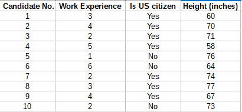
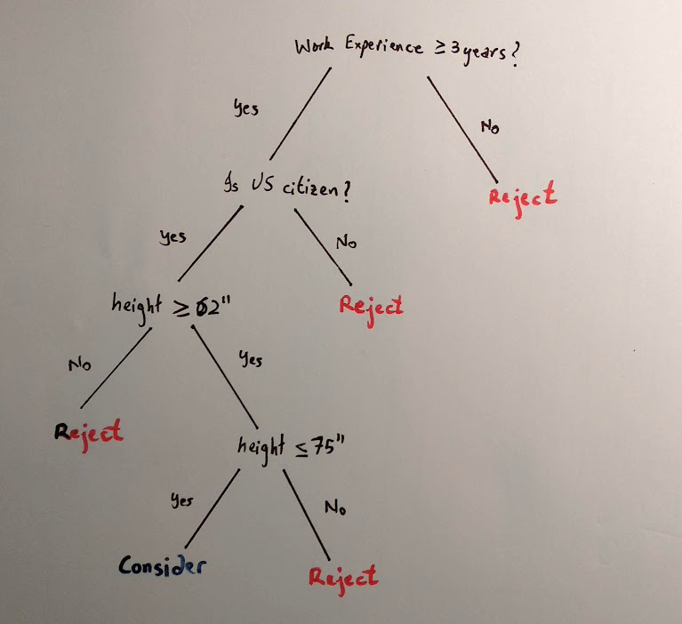
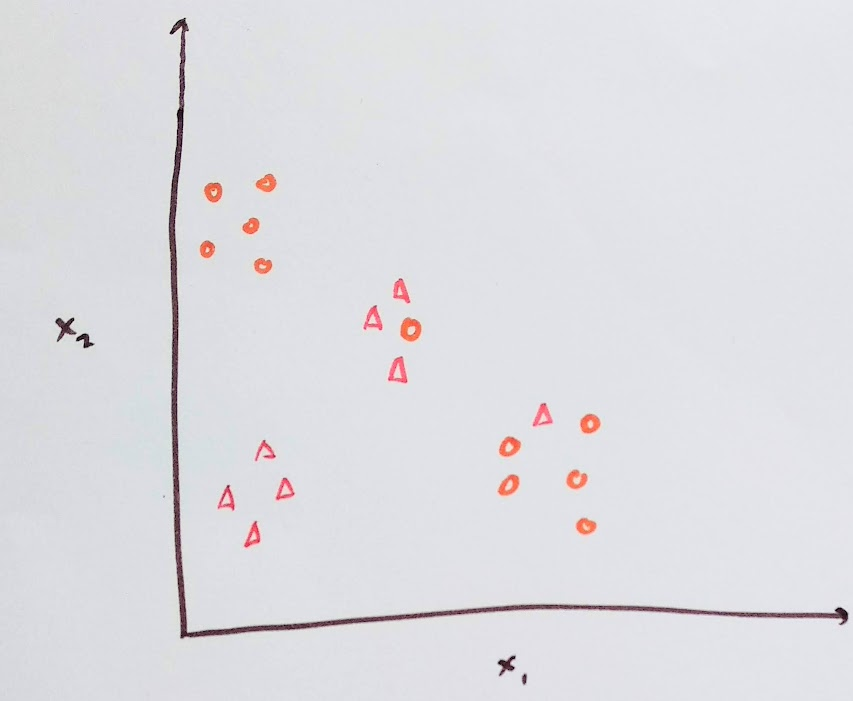
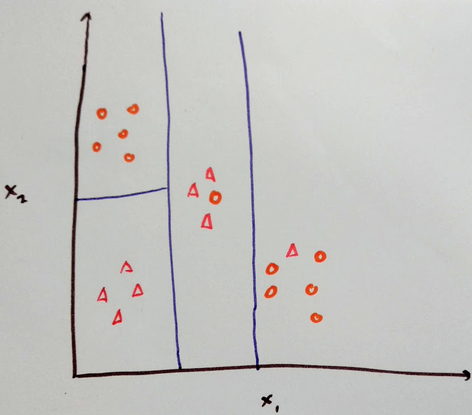

Decision Trees
Table of Contents
Decision Trees
Disclaimer: In the post, I have used NASA astronaut recruitment procedure for the example. I don't have any experience in it and do not work for NASA. ( At least not yet 🙂 ). The example is based on the information available here: https://www.nasa.gov/audience/forstudents/postsecondary/features/F_Astronaut_Requirements.html, https://www.space.com/25786-how-to-become-an-astronaut.html
What are Decision Trees?
Suppose you work for NASA and have to select the next batch of astronauts. You receive 20,000 applications from aspiring candidates. However, before you manually go through each, you need to keep only those that meet the criteria. The agency has strict requirements on experience, height and education.
Now, suppose that the following are the first 10 applications you receive:

Based on this you can clearly take decisions whether to consider the application for further review. Here clearly, the non-US citizens do not qualify. Further, applicants with less than 3 years of experience also do not meet the agency requirements.
This is where decision trees can come in handy. A decision tree for the above data can be as follows. Further, this is just one variant of a decision tree that can be formed.

As you can see, decision trees visually and explicitly represent decisions. Here, the internal nodes represent conditions on which the branch splits and the leaf node represents the decision.
Now, this was just an example. In reality, you can expect a more complicated tree with more decision nodes. However, the principle is the same.
Decision Trees in Machine Learning. There are two types of predictions which a machine learning model makes; Classification and Regression.
Classification deals with assigning classes. That is, in the above example, to tell whether to consider or reject the candidate's application.
Regression deals with continuous values. Suppose you are given the speed of a car and you want to predict the distance it travels after the brake is applied.
Decision trees can be used for both the tasks and thus, leads to two categories of trees; Classification tree and Regression tree.
How to make one?
Now that you have an idea of what a decision tree is, the next question that comes is, how do you build one?
Consider the data is represented in a 2D space:

Here, we would like to split the space into regions so as to correctly classify the data points.
This can be done as follows:

The blue lines represent the threshold of the split in x1 and x2.
In order to achieve this split automatically, we need to calculate the cost of each split. The split with the lowest cost is chosen. The aim of this is to find the most homogeneous branch. Which means that a group having the most similar features. The splitting is applied in recursion until some stopping criterion is met. This criterion can be either, the minimum number of training points on the leaf of the tree or limitation on the depth of the tree. This ensures that the tree does not overfit.
Show me the code
Following is the code for making a decision tree using Scikit-Learn in python.
from sklearn.tree import DecisionTreeClassifier
from sklearn import preprocessing
import numpy as np
le = preprocessing.LabelEncoder()
clf = DecisionTreeClassifier()
training = np.array([
[3, "yes", 62, "accept"],
[4, "yes", 70, "accept"],
[2, "yes", 71, "reject"],
[5, "yes", 58, "reject"],
[1, "no", 76, "reject"],
[6, "no", 64, "reject"],
[2, "yes", 74, "reject"],
[3, "yes", 75, "accept"],
[4, "yes", 67, "accept"],
[2, "no", 73, "reject"],
])
training[:,1] = le.fit_transform(training[:,1])
X = training[:,:-1]
y = training[:,-1]
clf.fit(X,y)
# test data
test = np.array([
[3, "yes", 63],
[1, "no", 59],
])
test[:,1] = le.transform(test[:,1])
print(clf.predict(test))
Predicted output:
['accept' 'reject']
You can grab the code here.